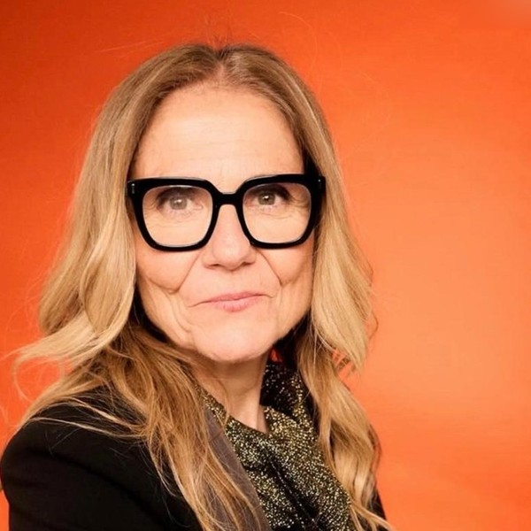

Ingeniería que protege a las personas,
con la IA en manos del técnico.
Llevo más de treinta años en minería, túneles, voladuras y obra. Todo lo que construyo con inteligencia artificial respeta una condición: la responsabilidad sigue siendo de la persona que conoce el terreno. La tecnología le quita horas de papel y le devuelve tiempo para mirar la obra.
Minería a cielo abierto e interior, túneles y voladuras controladas.
Coordinación, seguridad y calidad. Asesora de constructoras como Dragados y Acciona.
Gemelo digital para reciclar residuos en una base lunar. Reconocida por la NASA.
Sistema de alimentos para 15 personas durante 500 soles. Dos rondas superadas.
Lo aprendido fuera de la Tierra, aplicado a la seguridad del técnico aquí.
De la foto y el acta de obra a un informe de calidad, medio ambiente y prevención que firma el técnico. Anonimiza las caras y detecta las no conformidades que se repiten de una visita a otra.
Agente que vigila cada día el riesgo de incendio forestal en España con datos de satélite y avisa. He publicado su validación nacional, también lo que todavía no consigue: vigila y avisa, no predice dónde.
Planes de labores con nube de puntos LiDAR oficial y vuelos de dron propios. La geometría de bancos, bermas y pistas se comprueba contra la norma antes de dibujar un solo plano.
El contrato de hitos que hace financiable una obra industrializada en cooperativa. Lo presenta mi empresa, ARISTOSIA PROJECTS, en la categoría de digitalización.
Gemelo digital que clasifica residuos con IA, los procesa por pirólisis, recupera metales y fabrica material de construcción con el propio suelo lunar.
Producción de alimentos para una tripulación de 15 personas durante 500 soles. Superó el corte de admisión y dos rondas de evaluación del jurado de la NASA.
Fase 1, track Digital Twin. Único equipo internacional reconocido en ese track (2025).
Anuncio oficial →Creado y concedido por el Consell Social de la UPC (14-nov-2025).
Acuerdo del Consell Social →Día Internacional de la Mujer Ingeniera (23-jun-2026). Entregué los premios Future Women Engineering Talent a jóvenes ingenieras.
Crónica del acto →Reconocimiento de la revista Glamour España.
Entrevista →EL ESPAÑOL · Magas. Finalista del voto público en la XIII edición (Académicas e Investigadoras) y nominada de nuevo en 2026.
Finalistas XIII →Presidenta del Área de IA y Transformación Digital, XVI Congreso Internacional de Energía y Recursos Minerales.
Junta de Gobierno del Colegio de Ingenieros de Minas del Nordeste. Comisión de Ingeniería Médica y Sanitaria del COIIM.
«Ha demostrat que una enginyera pot esdevenir exemple per a moltes nenes i noies.»Consell Social de la Universitat Politècnica de Catalunya, acuerdo del 14 de noviembre de 2025
Enseño IA a técnicos y técnicas que nunca se habían considerado digitales, en obra, en empresa y en una comunidad abierta en español.

Foto: Flavio Orsolato · GlamourHa colaborado con Amazon Web Services, BBVA, Oracle, Cementos Molins, Dragados, Acciona, Talent Arena (MWC), Port de Barcelona, UPC, UPM y el Clúster de Residus de Catalunya.